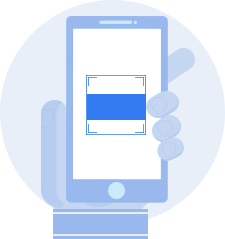

<ion-header>
  <ion-toolbar>
    <ion-buttons slot="start">
      <ion-icon name="chevron-back" id="back-icon" [routerLink]="['/login']"></ion-icon>
    </ion-buttons>
    <ion-title>Meu Prato</ion-title>
  </ion-toolbar>
</ion-header>

<ion-content>
  <div id="tela">
    
    <span id="text-footer">Verifique<br>seu primeiro prato!</span>
    <div id="menu">
      <ion-tab-button>
        <ion-icon name="stopwatch-outline" [style.color]="'#B5BBC9'"></ion-icon>
        <ion-label>Histórico</ion-label>
      </ion-tab-button>
      <ion-tab-button>
        <ion-icon name="add-circle" [style.color]="'#3783F5'" id="add-icon" [routerLink]="['/scan']"></ion-icon>
        <ion-label>Scan</ion-label>
      </ion-tab-button>
      <ion-tab-button>
        <ion-icon name="person-circle-outline" [style.color]="'#B5BBC9'" [routerLink]="['/perfil']"></ion-icon>
        <ion-label>Perfil</ion-label>
      </ion-tab-button>
    </div>
  </div>
</ion-content>